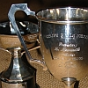

Bein, tout allit bein à l'Eisteddfod Vendrédi et Sanm'di. Ouaithe qué nou-s'ait r'mué à Saint Ouën viyant qu'la Salle Publyique dé Saint Martîn est bein trop p'tite pouor cont'nîn touos les mousses, nou 'tait patchi coumme des sardinnes Vendrédi pouor les clâsses ès mousses. Ch'est probabl'ye qu'lé changement d'jour avait aîdgi - achteu les mousses prannent part duthant eune journée scolaithe au run d'Sanm'di.
Parmi les clious d'la journée: un garçon du Collège De La Salle gângnit la clâsse des c'menchants; un hardé du Collège Victoria gângnit l'èrcitâtion d'san chouaix auve eune pièche amûthante qu'il avait composé lî-même; les hardelles du Collège ès Fil'yes gângnîdrent la Coupe des Enfuntchis pouor lus r'citâtion en tchoeu, et ieune dg'ieux gângnit l'èrcitâtion pouor les cheins en d'ssous d'15 ans; pouor les cheins d'15 à 20 ans, eune hardelle d'l'êcole dé Hautlieu gângnit la clâsse et ou gângnit la lectuthe à livre ouvèrt étout. Pouor la lectuthe à livre ouvèrt y'avait eune bouonne pouongnie d'compétiteurs parmi les jannes, v'là tch'est encouothageant. Y'avait tant d'compétiteurs dans les clâsses ès mousses qu'l'heuthe du dînner et la fîn d'l'arlévée fûdrent èrtèrgies et bein d's êcoles n'pûdrent pon rester pouor l'adjudicâtion car les minibeusses avaient 'té c'mandées en l'heu.
Lé Vendrédi au sé pouor l's adultes, i' n'y'avait pon tant d'monde dans l'audienche, mais la qualité des présentâtions 'tait haute. Les dgialogues împromptu 'taient, coumme dé couôteunme, rîsibl'yes à en faithe rithe les cats. Parmi les sujets împôsés: "Ch'est-i' eune bouonne idé d'bâti un pont d'ichîn en France?", "Les hoummes n'ont qu'deux d'fauts: chein qu'i' dithent et chein qu'i' font", "Saint Ouën dév'thait dêcliather s'n îndépendance". Y'avait d'la chant'tie non-compétitive (auve, bein seux, "Ma Normandie" et "Man Bieau P'tit Jèrri"). Et un duologue prépathé pouor ag'ver la séthée - ch'fut eune pièche bein rîsibl'ye entouor "L'Tou d'France, les femmes cyclistes et la drogu'thie". Et l'èrmueûthie d'salle avait 'té eune bouonne chose, car y'avait deux bikes sus la strade pouor la pièche.
Lé Sanm'di au sé, la Salle Pârouaîssiale 'tait acouo patchie. Nou c'menchit la séthée auve les gângnants des clâsses ès mousses à r'présenter lus pièches pouor les grandes pèrsonnes - et l'hardé du Collège Victoria r'chut la coupe pouor la miyeu présentâtion d'touos les mousses.
Pouor les grandes pèrsonnes, ch'fut l'ex-Sénateu Jean Le Maistre tchi remportit la coupe pouor la lectuthe prépathée auve "À Bétôt" d'Ph'lippe d'la Golarde. L'adjudicateu fît eune jug'gie d'Salomon dans la clâsse des èrcitâtions en tchoeu car i' donnit les mêmes mèrques à toutes les êtchipes tch'èrchûdrent des cèrtificaux d'or.
La lectuthe à livre ouvèrt attriotchit un assez grand nombre dé compétiteurs ch't' année. La pièche chouaîsie 'tait entouor la Milice Rouoyale dé Jèrri et en partitchulyi l'sèrvice duthant la Grande Dgèrre. V'là tchi 'tait topique, mais la pièche cont'nait hardi d'dates épis des noms et des titres (en Français et Angliais étout) tchi complyitchit la liéthie.
Pouor lé chent'naithe dé l'Eisteddfod dé Jèrri (tchi c'menchit en 1908, mais les preunmié Séthées Jèrriaises quémenchîdrent raîque en 1912) eune clâsse spéciale non-compétitive offrit ès vielles gens la pôssibilité d'présenter des pièches pouor lé pliaîsi d'l'audienche.
Auve tout chenna, lé sé 'tait dêjà bein avanchi quand nou-s'arrivit à la pièche dé thiâtre. Ch'fut eune conmédie satirique entouor la politique auve les pârouaîssiens à lus pliaindre entouor les minnistres - mais tchi surprînse pouor l'audienche quand l'Chef Minnistre lî-même et sa missis appathûdrent sus la strade coumme lé dèrnié ridgeu! Véthe, ch'tait l'chef du gouvèrnément en pèrsonne tch'avait accordé en s'gret pouor graie chutte surprînse-là et jouer dans la conmédie. Sans doute, ch'est un sîngne dé souôtchien pouor la langue Jèrriaise et pouor l'Eisteddfod dé Jèrri (et auve lé disteurbé politique d'achteu, ch'est ravissant qu'i' pouvait affaûrder l'temps pouor prendre part dans eune pétite conmédie. I' faut vaie si l'préchain Chef Minnistre es'sa d'même en faveu d'not' tchultuthe.
Né v'là, les coupes gângnies, les cèrtificaux donnés, les pièches èrcitées et, j'espéthons, des jannes entchéthinnés pouor continnuer not' langue et sa tchultuthe.
Viyiz étout: